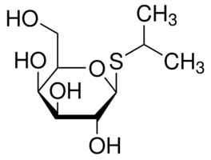

| Product Name | Isopropyl-beta-D-thiogalactopyranoside |
| Synonyms | IPTG;Isopropyl-beta-D-thiogalactoside;IPTG, HEMIDIOXANE ADDUCT; ISOPROPYL-1-THIO-BETA-D-GALACTOPYRANOSIDE;ISOPROPYLTHIO-BETA- GALACTOSIDE;ISOPROPYLTHIO -BETA-THIOGALACTOSIDASE; ISOPROPYLTHIO-B-THIOGALACTOPYRANOSIDE;ISOPROPYL THIOGALACTOSIDE;ISOPROPYL-BETA-D-THIOGALACTOPYRANOSIDE, DIOXANE FREE;Isopropyl β-D-1 Thiogalactopyranoside; propan-2-yl 1-thio-beta-D-galactopyranoside;1-methylethyl 1-thio-D-galactopyranoside ISOPROPYL-BETA-D-THIOGALACTOPYRANOSIDE (IPTG) DIOXANE FREE |
| Molecular Formula | C9H18O5S |
| Molecular Weight | 238.30 |
| CAS Registry Number | 367-93-1 |
| Molecular Structure |  |
| Appearance | White to off-white crystalline powder |
| Purity (By HPLC) | Min 99%+ |
| Assay (By HPLC) | 98% - 101% (On Anhydrous Basis) |
| Specific optical rotation | -31.5 ± 3.0° [a]D20(c=1,H2O) |
| Solubility | Soluble in water, and methanol |
| Water content (BY KF) | Max 1% |
| Melting Point | 110-114℃ |
| pH (5% in water) | 5.0 - 7.0 |
| Dioxane free | Not detected |
| Storage | Shipped at Ambient Temperature. Store at +2 - 8°C. |
| For Research Use Only | Not Intended for Diagnostic or Therapeutic Use. |
| Description | IPTG, Dioxane-Free (isopropyl-β-thiogalactoside) is an analogue of allolactose that binds specifically to the repressor protein of thelacoperon and induces expression of β-galactosidase inEscherichia coli.The compound is widely used with X-Gal plates to screen for blue and white colonies. Thelacoperon system and IPTG have been used in multiple cloning experiments and cellular systems to study gene activity. |
| Usage | Following reconstitution, aliquot and freeze (-20°C). Stock solutions are stable for up to 6 months at -20°C. Induces protein synthesis inE. coliwhen transcription is controlled by thelac-promoter. In conjunction with X-gal,q.v., in detection oflacgene activity during cloning experiments. IPTG is an inducer of β-galactosidase activity in E. coli. It is commonly used in conjunction with X-GAL to detect lac gene expression in cloning applications, thus allowing dection of recombinant molecules. |
| Application | An analogue of allolactose that binds specifically to the repressor protein of thelacoperon. |
| Manufactures a grade that is of plant origin and therefore does not have the usual TSE/BSE issues. We call this grade “IPTG non-animal origin” and it is available as a free flowing crystalline powder in a range of packaging from 50 g to 20 kg drums. |